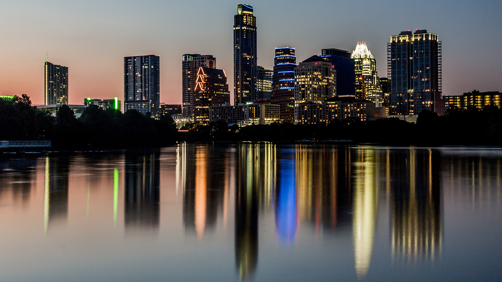

Welcome to Livestrong Cycling Tours
Livestrong Cycling Tours is the leader in professional led tours for amateur cyclists. Our fully supported tours traverse historic, beautiful, and cycling friendly areas of the United States and Europe. With over 15 years of experience, we are uniquely prepared to provide an unforgettable cycling vacation.
Some of our tour leaders
‣ Lance Livestrong: The first and only 7 time winner of the Tour de
France.
‣ Greg LaMond: The first American winner of the Tour de France.
‣ John Tomac: Mountain bike icon and repeat winner of the NORBA and
UCI world championships.
‣ Rebecca Twigg: Two-time Olympic Medalist and 6 time winner of the
World Track Cycling Champioship.
‣ Ned Overend: Mountain bike legend. Has raced professionally from
1980 to 2007, winning events every
year.
‣ Missy Giove: Aka the Missile. All time win leader in NORBA
downhill
events, winning 14.
‣ Chris Froome: Winner of the 2017 Tour de France.
Unlike other tour companies, our company is a non-profit organization. We donate every cent of our profits to the Livestrong Foundation. If you would like to visit our headquarters, we are located in Austin TX.
